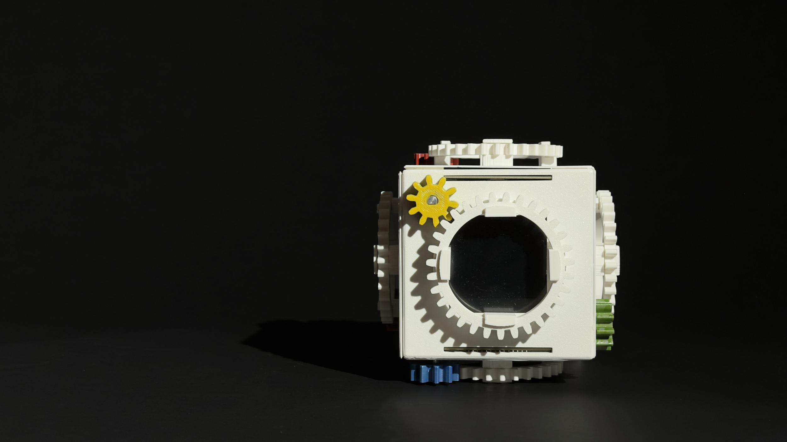
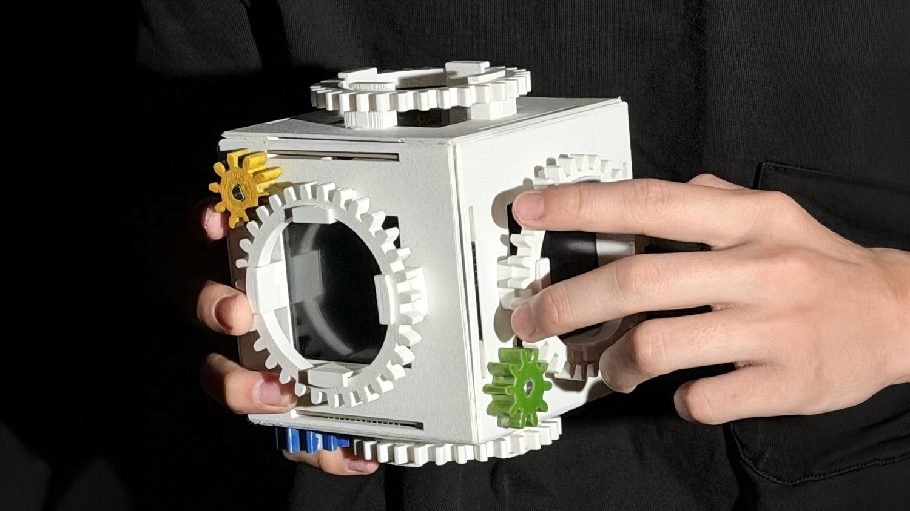
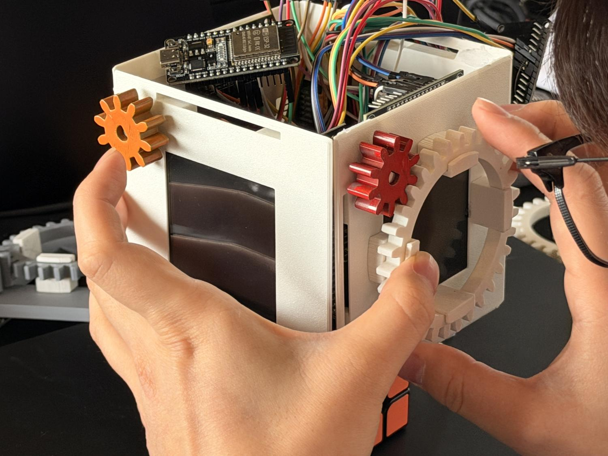
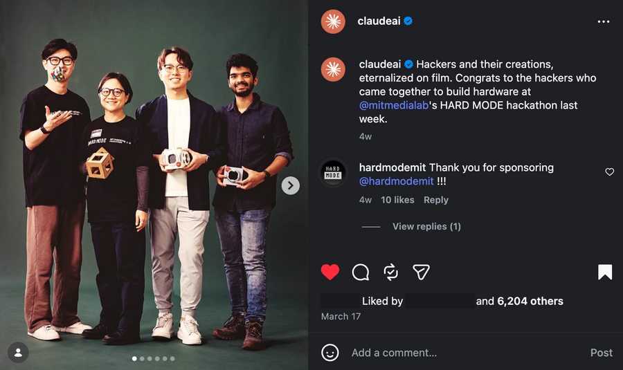

Unreasonable Cube
A physical AI that maps challenges to multidimensional perspectives through tangible interaction.
By replacing the static screen with a voice-driven, gear-based interface, the system transforms the act of problem solving into a tactile dialogue. Users speak their challenges directly to the object, which then projects an analytical framework across its six faces, allowing for the physical manipulation of abstract thought through rotation and speech.

MULTIDIMENSIONAL REASONING
When facing a complex problem, the standard digital interface often reinforces linear thinking. Most AI chat paradigms encourage a one-directional thread—message after message—that can trap the user in a tunnel-vision groove. Unreasonable Cube is a physical AI interface designed to break this pattern by making problem-solving multidimensional.
Drawing inspiration from the Rubik’s Cube—a cultural shorthand for complexity and transformation—the device translates a spoken challenge into six distinct lenses: relevance, emotional resonance, relationships, blind spots, systemic forces, and the unspoken.
As the user rotates the cube’s faces, a Rubik’s adjacency weight model reconfigures how these perspectives interact. The embedded screens pulse with high-contrast color, reflecting the shifting balance of the user's inquiry. This generative loop allows for a speculative glimpse of a solution, shaped not just by a single prompt, but by the physical configuration of the object.

TECHNICAL ARCHITECTURE
The system utilizes a tightly coupled hardware-software loop to maintain real-time physical-to-digital synchronicity:
- Core: Custom mechanical assembly housing 6x ESP32 microcontrollers.
- Displays: Six 4" ST7796 TFT screens.
- Mechanics: Gear-driven system with outer gear rings and internal rotary encoders to allow rotation without stressing internal wiring.
- AI Layer: OpenAI Whisper for speech-to-text with tuned RMS thresholds.
- Reasoning: Claude 3.5 Sonnet generates the initial lenses and the final speculative narrative.
- Weight Engine: Python-based coordinator that calculates interaction vectors.
Rather than hardcoded mappings, the cube uses the full weight vector influenced by every rotation and press to shape follow-up questions. This creates a feedback loop where movement informs music-like variations in logic, and the machine, in turn, inspires further thought.

TANGIBLE AGENCY
By leveraging large language models to interpret open-ended challenges through a constrained physical form, the project explores how tangible interfaces can create a deeper sense of agency and investment in AI-assisted creative processes.

"Unreasonable Cube was featured by Anthropic as a pioneering example of tangible AI. By moving the interaction from a screen into a physical object, the project demonstrates how LLMs can be used to navigate complex, non-linear human challenges through tactile feedback."
Anthropic / Claude.ai